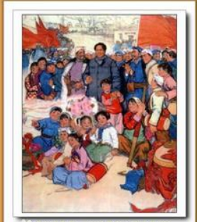
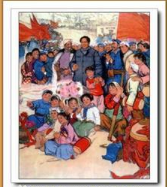

打造地方红色文化新高地
保护红色资源 · 传承红色记忆
·
弘扬革命传统

[红色歌曲]
【新时代 新长征】一路走一路唱，本土歌手窦老三与红色歌曲《映山红》 2017-10-27《映山红》这首红色歌曲一直伴随着我们，它是由六安本土歌手窦老三重新演绎，一路走一路唱，唱出了自己的独特风格。

[红色歌曲]
【新时代 新长征】一路走一路唱，本土歌手窦老三与红色歌曲《映山红》 2017-10-27《映山红》这首红色歌曲一直伴随着我们，它是由六安本土歌手窦老三重新演绎，一路走一路唱，唱出了自己的独特风格。